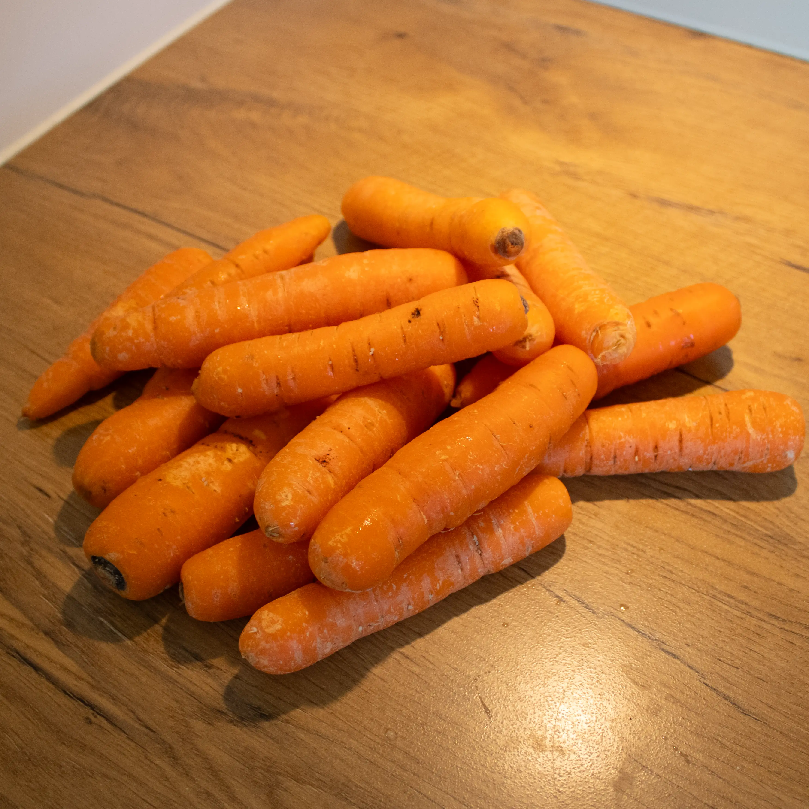
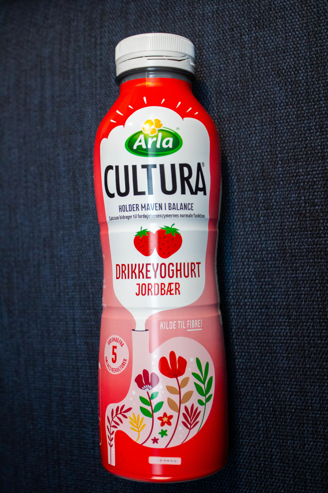
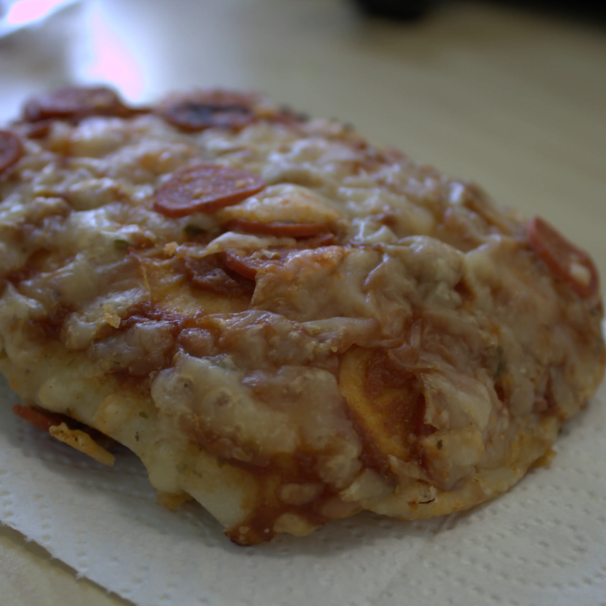
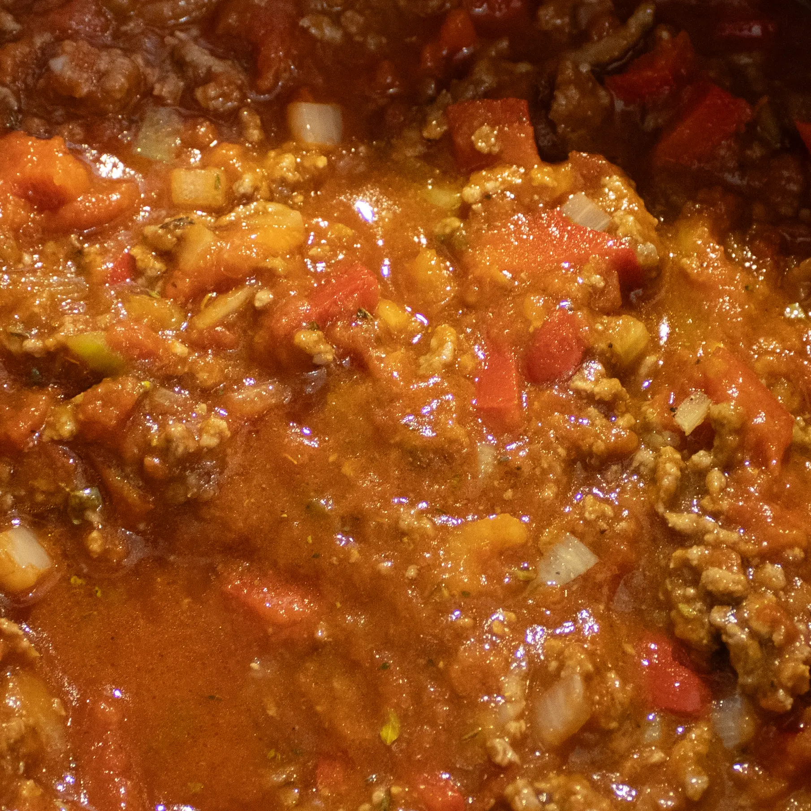
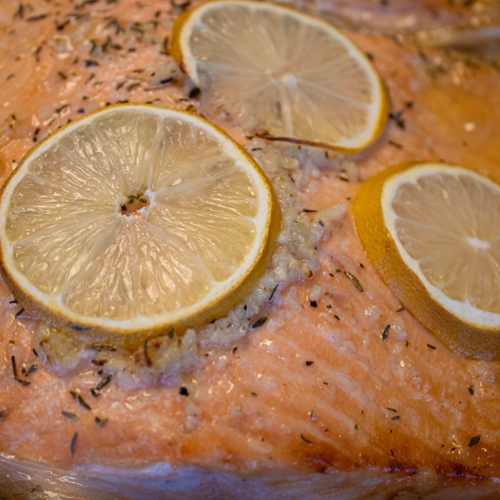
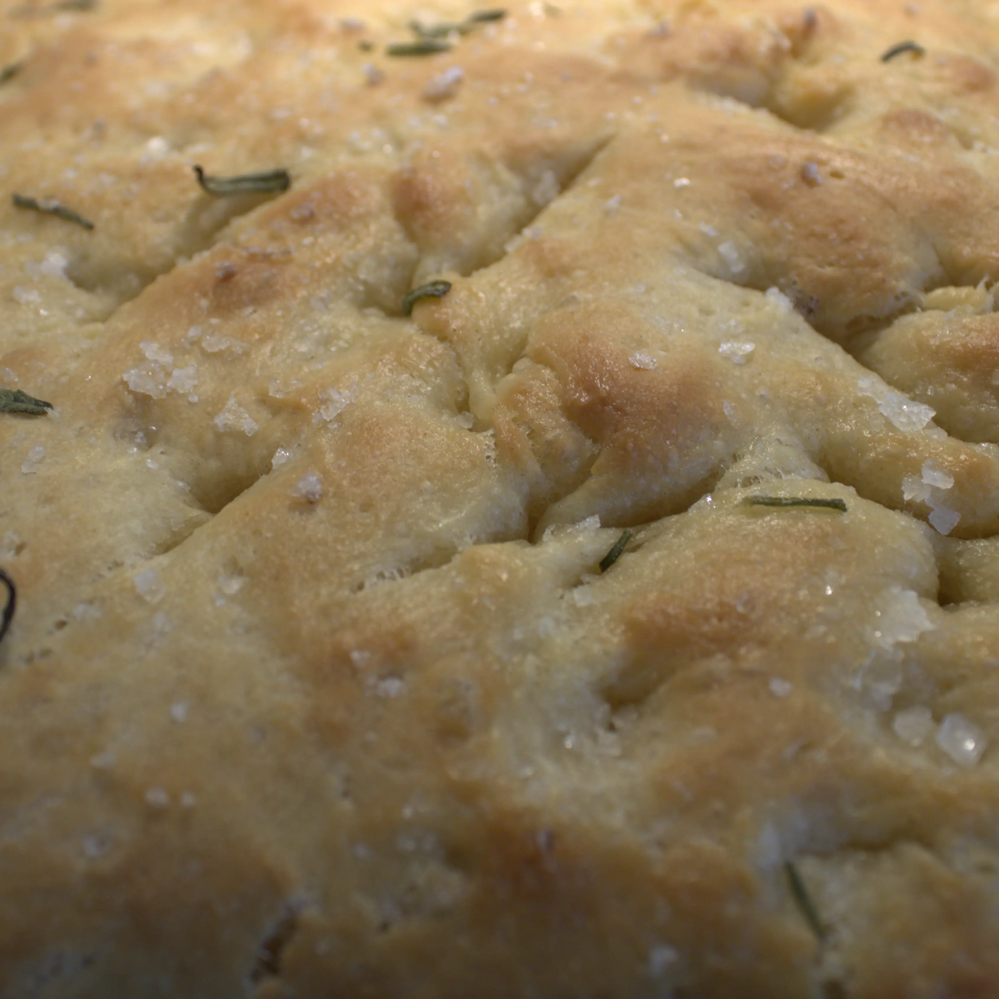

Vi ønsker alle at leve så længe som muligt, en af måderne man kan forbedre sine muligheder, er ved at spise en sund og varierede kost, det betyder at disse anbefalinger bare er anbefalinger og ikke noget vi anbefaler di spiser hver eneste dag.

Grønsager
Især bælgfrugter er her gode at spise da de har mange næringsstoffer. Dog anbefales der at spise ca. 6 stykker frugt/grønt om dagen.

Mælkeprodukter
Mælkeprodukter er gode for at få noget kalk, dog skal du prøve at holde fedt procenten lav for at undgå for meget fedt.

Færdigretter
Du skal helst undgå færdigretter især ultra forarbejdet mad, dog hvis du skal kan du kigge på nærringsindholdet for at se hvor sundt det er.

Kød
Det anbefales at du spiser ca 360 g kød om ugen, på den måde får du dets næringsstoffer uden det bliver for meget. Derudover bør du undgå at spise forarbejdet kød og formindske brugen af kød fra firbenede dyr, spist derfor helst kød fra fjerkræ.

Fisk
Det anbefales at spise meget fisk, af forskellige former, spis derfor gerne fisk mindst 2 dage om ugen.

Brød
Her er rugbrød og fuldkornsbrød bedst da de har mange kostfibre der kan hjælpe fordøjelse.